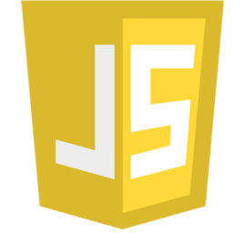

Projects
C++, HTML, CSS, & JS Webserver and Single-Page Web Application
A Webserver that uses Window's WSA socket library to listen for requests and respond to them using specialized classes, built in C++.
The partnered single-page web application serves as a proof of concept and also contains details on how the webserver is implemented.
C++ & SDL2 - 2D Platformer
A small 2D game to familiarize myself with the SDL2 graphics library for C++ and OpenGL.
The program creates resizable windows, listens for key events and renders graphics on the screen.
C++ & DirectX - 3D Game
A small 3D game to familarize myself with DirectX and Win32 libraries for C++ and DirectX.
The program creates resizable windows, listens for key events, renders 3D graphics and plays sound.
C++ & Unreal Engine - 3D Games
A collection of 3d games using the Unreal Engine.
C++ - Various Command Line Projects
A collection of command line projects made in C++, usually quick 5 minute projects.
C & Glut - Raytracer Game
Using C and the Glut OpenGl library I created a game that shows a 2d and faux 3d perspective side by side as a learning tool.
The program creates resizable windows, listens for key events, loads maps dynamically from a file, calculates camera view angles through mouse movements, and changes walking angles based on the angle of the camera.
C - Various Command Line Projects
A collection of command line projects made in C, usually quick 5 minute projects.
 Projects
JS - Router and Single Page Application
An exercise in using the history api and preventing default events.
This webpage is selfcontained but allows separation of page content into modules without the use of a framework.
HTML, CSS, & JS - Various Applications
A collection of small example websites or applications to showcase or learn html, css, & javascript.
 Projects
Projects Projects
Projects